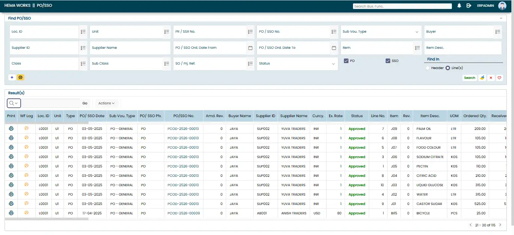
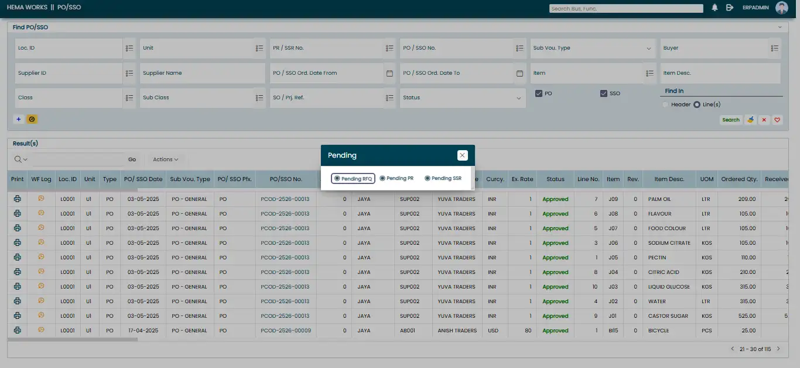
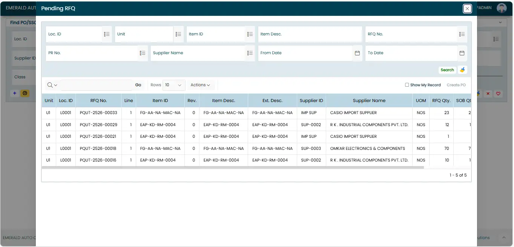
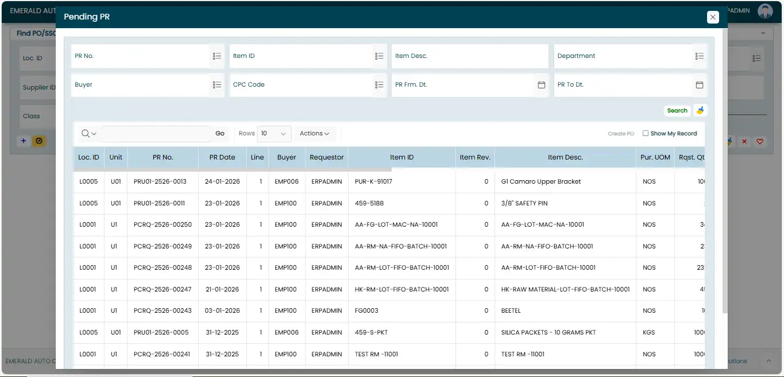

<div data-category="Purchase Order" data-title="Quotation to PO Conversion" data-updated="December 01, 2025" data-contributors="RoadmapIT" data-breadcrumb="Home,Purchase Order,Quotation to PO Conversion">
  <div class="page-content">
    <p>Quotation to Purchase Order (PO) Conversion allows users to convert approved supplier quotations into firm purchase orders.</p>

    <h5>Navigation Path:</h5>
    <p class="fs-6">Supply Chain \ Purchasing \ Transaction \ Purchase order</p>

    

    <ul style="list-style-type: none; align-content: center">
      <li class="mouse-icon">Search screen displays the list of Purchase orders with the relevant details and its status.</li>
      <li class="mouse-icon">Click on search to filter all the records.</li>
      <li class="mouse-icon">User can filter the respective documents by entering the search parameters at the header.</li>
      <li class="mouse-icon">Using search, system displays the results relevant to the search parameters entered.</li>
      <li class="mouse-icon">On click; the corresponding transaction record will be displayed.</li>
      <li class="mouse-icon">Using <i class="bi bi-eraser text-secondary"></i> icon, entered search parameters can be cleared.</li>
      <li class="mouse-icon">To close the screen, use <i class="bi bi-x-lg text-danger"></i> icon.</li>
      <li class="mouse-icon">
        By Clicking the
        <i class="bi bi-plus fs-4 mx-2 text-primary"></i>
        Add button we can create Purchase Orders by entering all the mandatory fields displayed in the Add dialog.
      </li>
      <li class="mouse-icon">
        Click on
        <i class="bi bi-clock-history text-primary"></i>
        button, all the Pending RFQ are displayed.
      </li>
    </ul>

    

    <ul style="list-style-type: none; align-content: center">
      <li class="mouse-icon">Select the Pending RFQ radio button, system displays the approved quotation to be converted into order.</li>
    </ul>

    

    <ul style="list-style-type: none; align-content: center">
      <li class="mouse-icon">Filter the RFQ Document.</li>
      <li class="mouse-icon">Select the Quotation and click on Create PO to create the purchase Order.</li>
    </ul>

    <ul style="list-style-type: none; align-content: center">
      <li class="mouse-icon">Select the Pending PR radio button, system displays the approved PR to be converted into order.</li>
    </ul>

    

    <ul style="list-style-type: none; align-content: center">
      <li class="mouse-icon">Filter the PR Document.</li>
      <li class="mouse-icon">Select the PR and click on Create PO to create the purchase Order.</li>
    </ul>
  </div>
</div>
